1.系统的登录。
双击桌面上的图标IE浏览器，在地址栏里输入网址名称，名称为http://soa.yundasys.com:20088/ydsoa/cas.login?CASLOGOUT=true 打开页面后进入登录页面。

注：验证码看不清，可点击验证码更新
2.系统首页

注：界面分四个区域
3.系统菜单―我的流程
在系统菜单我的流程里统一对流程进行操作：操作功能包括有【发起流程】，【查询流程】，【我发起过的流程】，【待办流程】，【已办事宜】，【工作流客户端】。
如图：

4.点击【发起流程】，会出现如下界面，然后选取――【离职流程】
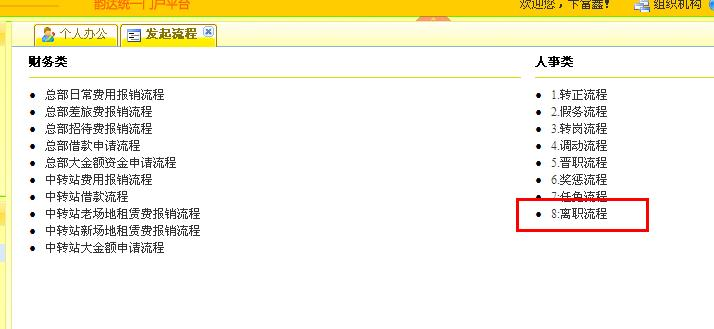
5.然后会进入标准表单界面
6：例图（2）
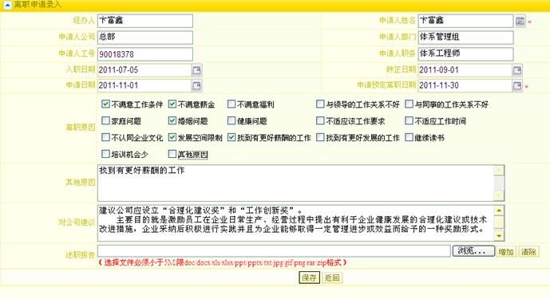
图2
7：填写离职表单的操作说明
（3） 首先看到的表单，有些个人信息系统已经填好了（图3）
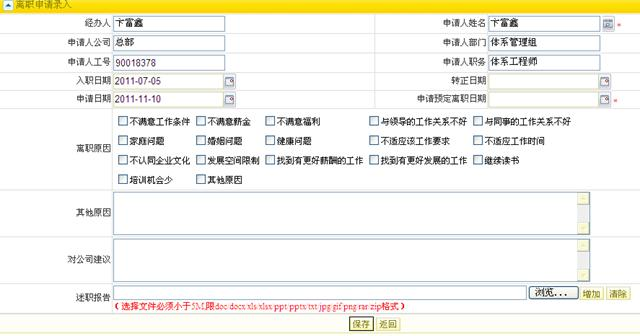
图3
注意看一下，这是张标准填写的表单 。红色字代表范围限制， *表示必填项 ，
 表示选择日期 ，
表示选择日期 ， 表示选择组织架构人员或岗位。
表示选择组织架构人员或岗位。
（2）填写步骤
1 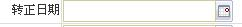
2 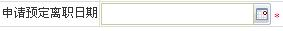
4 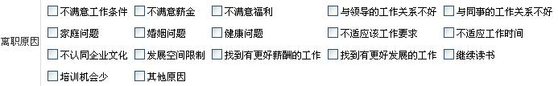
5  这里
填写申请人的其他离职原因
这里
填写申请人的其他离职原因
6  这里 填写 离职时对公司有什么建议
这里 填写 离职时对公司有什么建议
7述职报告：就是说上面的工作总结不够填写，还可以增加附件。 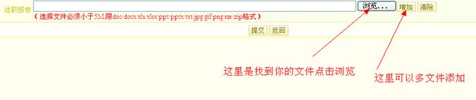
注意 选择文件必须小于5M,限doc/docx/xls/xlsx/ppt/pptx/txt/jpg/gif/png/rar/zip格式
最后点击提交：
3 提交成功后
（1）看到的 如图所示
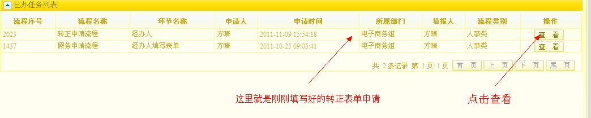
图4

图5
（2）流程信息查看页面
1流程信息

图6
2历史步骤

图7
3当前步骤

图8
图18所示 审批的人员，要注意的是，如果长时间没审批，可电话通知他进行审批，如果哪个环节的人员 长时间不在或出差，可电话通知权限管理员，更改该环节人员，进行审批！
4流程图示
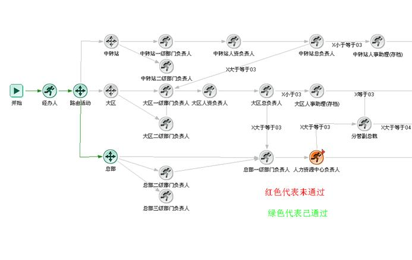
图9
5已经审批完成的流程图
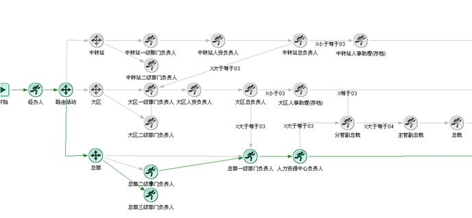
图10
6当前步骤已完成

图11
看到的图（10）图（11）就表示离职流程审批好了
三：审批人员的 提交， 回退。（图12，13,14,15）
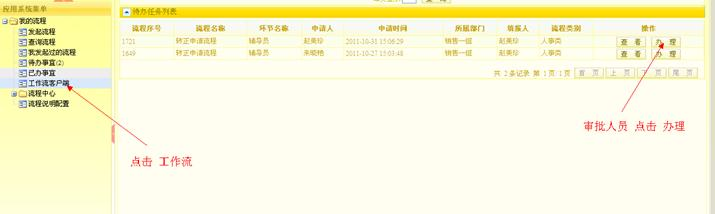
图12
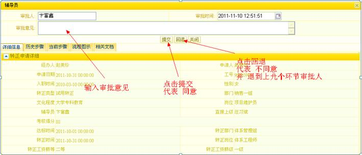
图13

图14
 图15
图15
图15所示 在办理表单的时候 ，这里也可以查看流程表单的信息。